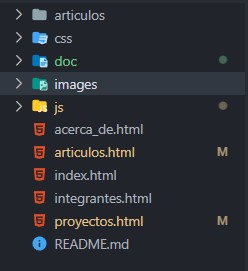
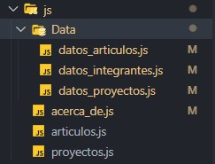

Documentación del sitio web
Arquitectura de carpetas del proyecto
A continuación se muestra la arquitectura de carpetas del proyecto.
Donde:
La carpeta articulos contiene archivos en formato pdf de los articulos escritos por los miembros del Cuerpo Académico Sitemas Inteligentes.
La carpeta css contiene los archivos para dar estilo al sitio web. Hay un archivo .css para cada página del sitio web, así como para la barra de navegación, el pie de página, estilos generales y las variables css.
La carpeta doc almacena los archivos html, css y de imagenes para esta pagina de documentación.
La carpeta images almacena los archivos de imagen que se utilizan en el sitio web, incluyendo el favicon.ico.
Los archivos .html son los archivos html de las páginas del sitio web.
La carpeta js se describe a continuación:
La carpeta js consta de dos partes: la primera es la subcarpeta Data y la segunda son los archivos acerca_de.js, articulos.js y proyectos.js
Los archivos acerca_de.js, articulos.js y proyectos.js continen el codigo para insertar en el html las tarjetas de cada entidad segun sea el nombre del archivo .js. Por ejemplo, el archivo proyectos.js inserta dentro de el archivo proyectos.html el código html para visualizar las tarjetas de los proyectos. Así como también hace mostrar y ocultar el modal con la información de la entidad de la tarjeta que fue presionada.
Los archivos que están dentro de la carpeta Data son arhivos que almacenan una estructuras de datos de tipo lista de cada entidad según indica el nombre del archivo. Estos archivos son consultados por los archivos descritos en el parrafo anerior. De manera que, si se desea insertar, modificar o eliminar los datos de las entidades, es en estos archivos donde se debe realizar tal modificación.
Si lo que se quiere hacer es modificar las tarjetas y elementos que aparecen en las páginas del sitio, lo mejor es consultar la sección de casos de uso que se encuentra a continuación. Se describe de manera detallada como realizar dichas modificaciones.
Casos de uso
¿Cómo modificar la página "Inicio" del sitio web?
Para modificar la información de esta página simplemente se accede al archivo index.html y se modifica el texto. Si se desea modificar los estilos, se debe acceder al archivo css/index.css.
¿Cómo modificar la página "Acerca de" del sitio web?
Dentro del archivo acerca_de.html Se puede modificar todo exepto las tarjetas de los participantes.
Las tarjetas que aparecen en esta página se insertan desde el archivo js/acerca_de.js.
Este archivo importa datos desde el archivo js/Data/datos_integrantes.js. Estos datos se usan para insertar dentro del DOM (document object model) tanto las tarjetas de los integrantes como el modal que aparece al presionar el botón "Ver más" que aparece en las tarjetas.
Para modificar la información que aparece tanto en las tarjetas como en el modal, se debe acceder al archivo js/Data/datos_integrantes.js y modificar los datos pertinentes.
Para modificar la apariencia y estructura de como se muestra la información, es decir como se muestra en las tarjetas y el modal, se debe acceder al archivo js/acerca_de.js y modificarlo de acuerdo a la apariencia que se busca conseguir.
EL codigo está pertinentemente comentado.
¿Cómo agregar un nuevo integrante?
Si se desea agregar la tarjeta de un nuevo integrante, se debe hacer lo siguiente.
- Primero se debe abrir el archivo js/Data/datos_integrantes.js. Notesé que los datos se guardan con una estructura de datos de tipo lista, es decir, se trata de una lista de integrantes, por cada integrante se crea de manera automatica una tarjeta en la pagina Acerca de.
- Copiar el ultimo objeto de la lista. En javascript un objeto es una estructra que agrupa datos usando llaves {}
- Pegar el objeto al final de la lista. Se debe pegar despues del ultimo objeto, pero antes de la llave de cierre de la lista ]
- Eliminar la informacion del integrante copiado y escribir la información del nuevo integrante que se va a insertar. Es importante que no se eliminen los atributos que ya tiene el objeto, a menos que entienda por completo el codigo del sitio web.
- Escribir el id correcto del nuevo integrante . El id es el número consecutivo. Se debe consultar el número id del integrante anterior y escribir el número que sigue.
- Dentro del integrante insertado hay una lista de proyectos donde participa el integrante. Cuando se agregue se debe considerar lo siguiente: EL atributo url debe tener el formato: ./proyectos.html#id_proyecto=x donde x debe ser sustituido por el id del proyecto en cuestión. El id del proyecto se debe consultar en el archivo js/Data/datos_protectos.js. Si el proyecto no existe, se debe insertar en el archivo js/Data/data_proyectos.js, se le asigna un id a ese proyecto, se regresa al archivo js/Data/data_integrantes.js y se usar dicho id en el atributo url de este integrante.
- Dentro del integrante insertado hay una lista de artículos donde participa el integrante. Cuando se agregue se debe considerar lo siguiente: EL atributo url debe tener el formato: ./articulos.html#id_articulo=x donde x debe ser sustituido por el id del artículo en cuestión. El id del artículo se debe consultar en el archivo js/Data/datos_articulos.js. Si el artículo no existe, se debe insertar en el archivo js/Data/data_articulos.js, se le asigna un id a ese artículo, se regresa al archivo js/Data/data_integrantes.js y se usar dicho id en el atributo url de este integrante.
- Dentro del integrante insertado hay una lista de producción académica donde participa el integrante. Se debe prestar mucha atencion a esta lista, ya que varía de acuerdo a cada integrante. La lista consta de objetos. Cada objeto tiene dos elementos: un nombre de dicha producción y una lista producciones. El nombre de producción puede ser cualquiera de los siguientes: "Artículo de difusión y divulgación", "Artículo arbitrado", "Artículos en revista indexada", "Asesoría", "Capítulos de libro", "Consultoría", "Informe técnico", "Libro", "Manuales de operación", "Material de apoyo", "Material didáctico", "Memorias", "Memorias en extenso", "Productividad innovadora", "Producción artística", "Prototipo" y "Otra". Se puede ver que son, sin embargo, los integrantes no suelen tener todos los tipos de producciones. Por ejemplo, si un integrante tiene producciones académicas de tipo Artículo arbitrado, Capítulos de libro y Memorias de extenso. La lista de producción académica de ese integrante deberá tener tres objetos. Un objeto con el nombre_producción: "Artículo arbitrado", el siguiente objeto con el nombre_producción: "Caítulos de libro" y el tercer objeto con el nombre_producción: "Memorias de extenso". Además de que cada objeto deberá tener una lista de producciones que corresponda con el nombre_produccion correspondiente. Por ejemplo, la lista del objeto con nombre_produccion: "Memorias de extenso deberá tener en su lista_producciones solo memorias de extenso. A su vez, cada lista_producciones tiene dos atributos: cita y link_externo. La cita no es más que el texto que se mostrará en el HTML, y el link_externo es el enlace externo que apunta a un sitio web donde se publicó esa producción (en caso de no estar publicado en otro sitio, solo colocar link_externo: "#") Cabe mencionar que si, por ejemplo, un integrante no tiene Memorias de extenso, no hay sentido en colocar un objeto de Memorias de extenso dentro de su lista de produccion_academica. Ya que ese objeto tendria una lista_producciones vacía.
¿Cómo modificar la página "Proyectos" del sitio web?
Dentro del archivo proyectos.html Se puede modificar el html de esta página, exepto las tarjetas de los proyectos.
Las tarjetas que aparecen en esta página se insertan desde el archivo js/proyectos.js.
Este archivo importa datos desde el archivo js/Data/datos_proyectos.js. Estos datos se usan para insertar dentro del DOM (document object model) tanto las tarjetas de los proyectos como el modal que aparece al presionar el botón "Ver proyecto" que aparece en las tarjetas.
Para modificar la información que aparece tanto en las tarjetas como en el modal, se debe acceder al archivo js/Data/datos_proyectos.js y modificar los datos pertinentes.
Para modificar la apariencia y estructura de como se muestra la información, es decir como se muestra en las tarjetas y el modal, se debe acceder al archivo js/proyectos.js y modificarlo de acuerdo a la apariencia que se busca conseguir.
EL codigo está pertinentemente comentado.
¿Cómo agregar un nuevo proyecto?
Si se desea agregar la tarjeta de un nuevo proyecto, se debe hacer lo siguiente.
- Primero se debe abrir el archivo js/Data/datos_proyectos.js. Notesé que los datos se guardan con una estructura de datos de tipo lista, es decir, se trata de una lista de proyectos, por cada proyecto se crea de manera automatica una tarjeta en la pagina Proyectos.
- Copiar el ultimo objeto de la lista En javascript un objeto es una estructra que agrupa datos usando llaves {}
- Pegar el objeto al final de la lista. Se debe pegar despues del ultimo objeto, pero antes de la llave de cierre de la lista ]
- Eliminar la informacion del proyecto copiado y escribir la información del nuevo proyecto que se va a insertar. Es importante que no se eliminen los atributos que ya tiene objeto, a menos que entienda por completo el codigo del sitio web.
- Escribir el id correcto del nuevo proyecto. El id es el número consecutivo. Se debe consultar el número id del proyecto anterior y escribir el número que sigue.
- Dentro del proyecto insertado hay una lista de integrantes del CA que participan en este proyecto. Cuando se agregue se debe considerar lo siguiente: EL atributo url debe tener el formato: ./acerca_de.html#id_integrante=x donde x debe ser sustituido por el id del integrante en cuestión. El id del integrante se debe consultar en el archivo js/Data/datos_integrantes.js.
- Dentro del proyecto insertado hay una lista de producción académica relacionada con este proyecto. Cuando se agregue se debe considerar lo siguiente: EL atributo url debe tener el formato: ./articulos.html#id_articulo=x donde x debe ser sustituido por el id del articulo que se agregó a la pagna Artículos. Si el artículo no se agregó a la pagina Artículos entonces el atributo url simplemente debe dejarse tal que así: url: "#". El id del artículo se debe consultar en el archivo js/Data/datos_articulos.js. Si el articulo no existe aún, entonces se debe agregar al archivo js/Data/datos_articulos.js, asignar un id y dicho id se debe colocar en el atributo url de este proyecto.
¿Cómo modificar la página "Artículos" del sitio web?
Dentro del archivo articulos.html Se puede modificar el html de esta página, exepto las tarjetas de los artículos.
Las tarjetas que aparecen en esta página se insertan desde el archivo js/articulos.js.
Este archivo importa datos desde el archivo js/Data/datos_articulos.js. Estos datos se usan para insertar dentro del DOM (document object model) tanto las tarjetas de los artículos como el modal que aparece al presionar el botón "Ver más" que aparece en las tarjetas.
Para modificar la información que aparece tanto en las tarjetas como en el modal, se debe acceder al archivo js/Data/datos_articulos.js y modificar los datos pertinentes.
Para modificar la apariencia y estructura de cómo se muestra la información, es decir cómo se muestra en las tarjetas y el modal, se debe acceder al archivo js/articulos.js y modificarlo de acuerdo a la apariencia que se busca conseguir.
EL codigo está pertinentemente comentado.
¿Cómo agregar un nuevo artículo?
Si se desea agregar la tarjeta de un nuevo artículo, se debe hacer lo siguiente.
- Primero se debe abrir el archivo js/Data/datos_articulos.js. Notesé que los datos se guardan con una estructura de datos de tipo lista, es decir, se trata de una lista de artículos, por cada artículo se crea de manera automatica una tarjeta en la pagina Artículo.
- Copiar el ultimo objeto de la lista En javascript un objeto es una estructra que agrupa datos usando llaves {}
- Pegar el objeto al final de la lista. Se debe pegar despues del ultimo objeto, pero antes de la llave de cierre de la lista ]
- Eliminar la informacion del artículo copiado y escribir la información del nuevo artículo que se va a insertar. Es importante que no se eliminen los atributos que ya tiene objeto, a menos que entienda por completo el codigo del sitio web.
- Escribir el id correcto del nuevo artículo. El id es el número consecutivo. Se debe consultar el número id del artículo anterior y escribir el número que sigue.
- Dentro del artículo insertado hay una lista de autores del artículo. Cuando se agregue se debe considerar lo siguiente: La lista se llena con objetos que tienen los atributos: nombre y url. En caso de que el autor no sea parte del CASI, entonces el atributo url se debe llenar tal que url: "#". Si el autor es parte del CASI, entonces el atributo url se debe llenar tal que url: "./acerca_de.html#id_integrante=x". Donde x se debe sustituir por el id que le corresponde al integrante del CASI. El id se puede consultar en el archivo js/Data/datos_integrantes.js.
- Dentro del artículo insertado está el atributo enlace_al_articulo_publicado y el atributo enlace_al_pdf. Al llenarlos se debe considerar lo siguiente: El atributo enlace_al_articulo_publicado es un enlace que apunta a un sitio web externo donde se encuentra publicado el pdf del artículo, por ejemplo, puede ser un enlace a ResearchGate. Si no se encuentra publicado en ninguna parte, simplemente se llena el atributo tal que enlace_al_articulo_publicado: "#". El atributo enlace_al_pdf es más complicado. Es un enlace que apunta al pdf del artículo, pero dicho pdf se encuentra dentro de este sitio, esoecificamente en la carpeta de articulos. La complicación radica en que para que funcione, primero se debe conseguir el pdf del artículo, agregarlo dentro de la carpeta articulos, despúes llenar el atributo enlace_al_pdf tal que enlace_al_pdf: "https://dominio/articulos/nombre_articulo.pdf". Donde dominio es el nombre de dominio del sitio web, nombre_articulo es el nombre del archivo pdf del artículo. Se debe asegurar que se agregó la extension .pdf. Esto se refleja en el sitio web en la parte del modal, para visualizar el PDF insertado dentro del modal, sin embargo, no se mostrará el contenido hasta que el codigo del sitio web se publique en el servidor. Es decir, no renderiza el PDF de manera local.